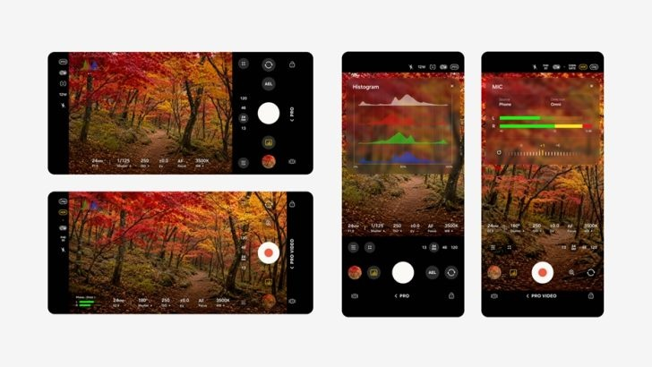
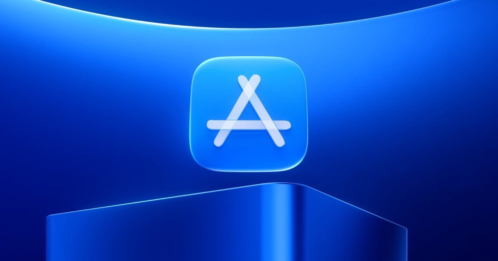
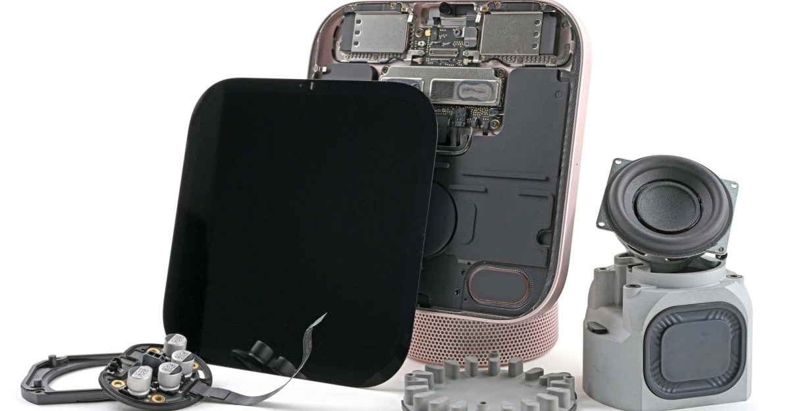
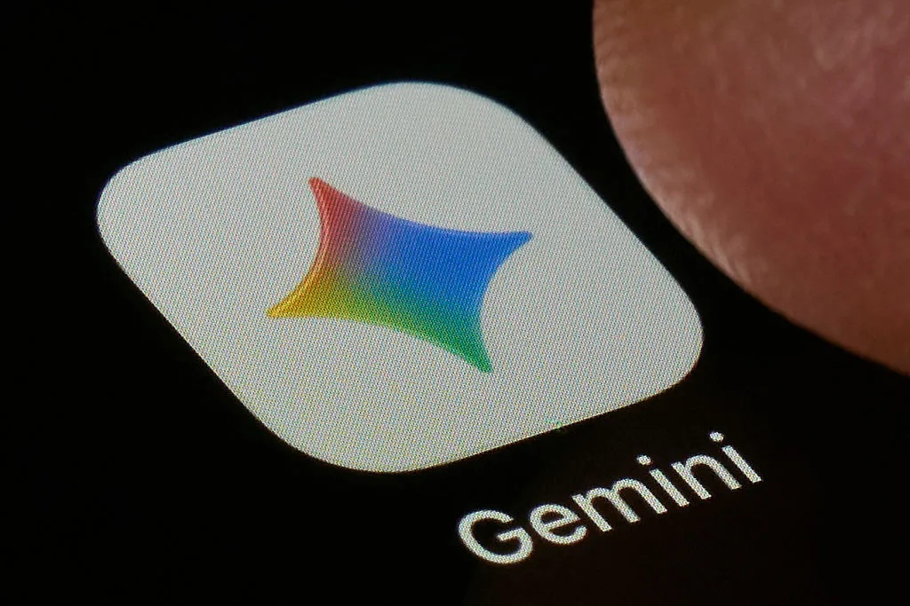
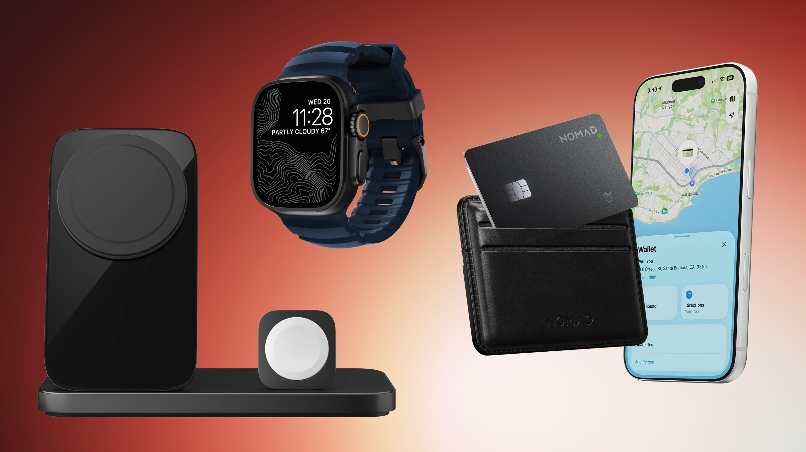
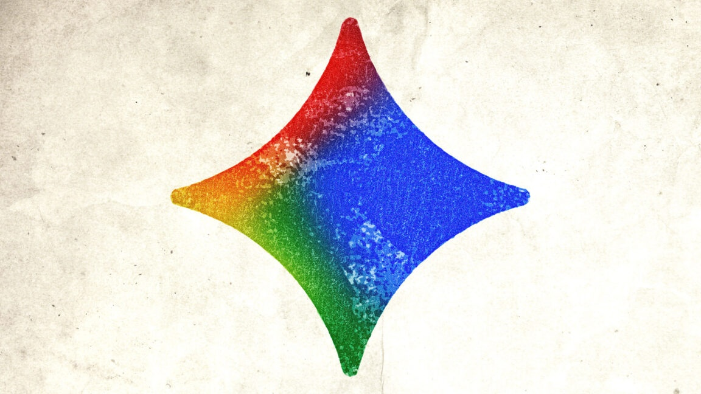
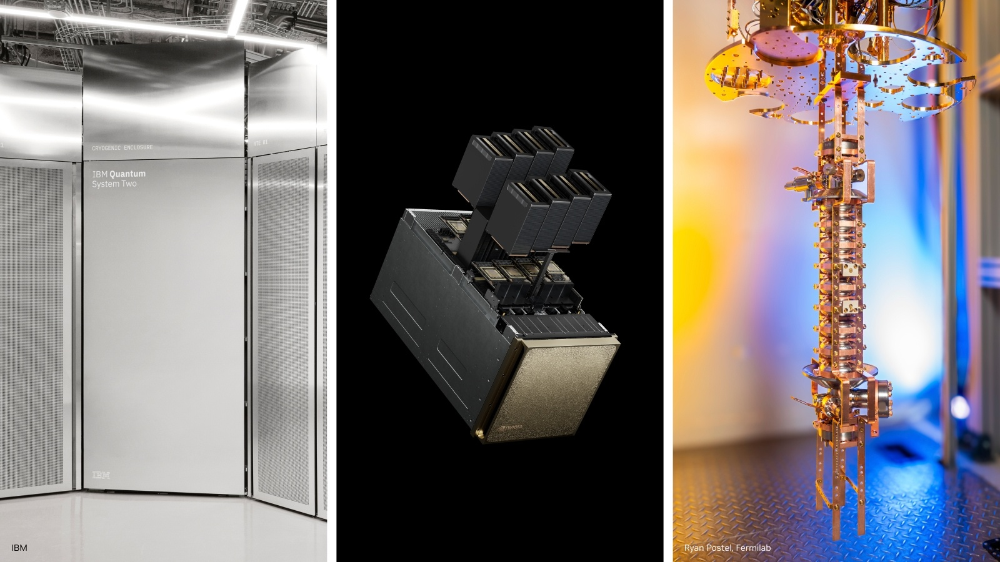
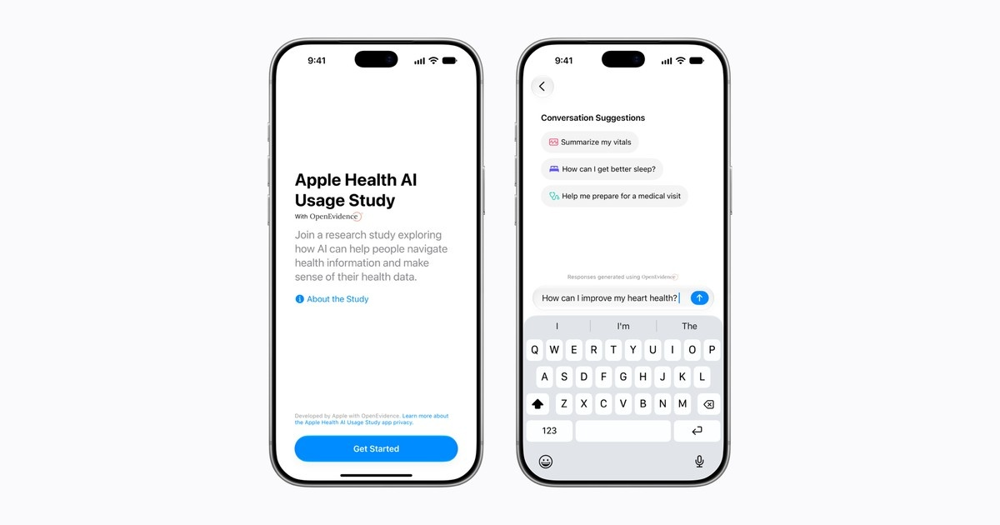

Samsung TV Plus transmite live ediția 2026 a premiilor MAMA AWARDS
Samsung TV Plus to Livestream 2026 MAMA AWARDS Globally
Samsung TV Plus va transmite în direct premiile MAMA AWARDS 2026, oferind fanilor K-pop acces global pe 20 și 21 noiembrie.
Samsung TV Plus will livestream the 2026 MAMA AWARDS globally, featuring two days of performances on November 20 and 21.
Citește articolul → Read article →Elon Musk clarifică distincția dintre Starlink și sistemul militar Starshield
Elon Musk Clarifies the Distinction Between Starlink and Starshield
Elon Musk clarifică rolul Starlink în Ucraina, subliniind diferența dintre rețeaua civilă și sistemul militar Starshield controlat de guvernul SUA.
Elon Musk clarifies the role of Starlink in Ukraine, highlighting the difference between the civilian network and the government-controlled Starshield system.
Citește analiza → Read analysis →
Comisia Senatului aprobă nominalizarea FCC în ciuda boicotului democrat
Senate Committee Approves FCC Nominee Amidst Democratic Boycott
Comisia pentru Comerț a Senatului a avansat nominalizarea lui Danielle Thumann pentru FCC, în ciuda boicotului democraților și a acuzațiilor de mărturie falsă.
The Senate Commerce Committee advanced FCC nominee Danielle Thumann 15-0 as Democrats boycotted, citing procedural concerns and alleged false testimony.
Citește analiza → Read analysis →
Apple lansează prima actualizare software pentru dispozitivul HomeView
Apple Releases First Software Update for HomeView Device
Apple a lansat actualizarea software 27.2.1 pentru dispozitivul HomeView, reprezentând primul update de la debutul produsului.
Apple has released the 27.2.1 software update for the HomeView device, marking its very first post-release update.
Citește analiza → Read analysis →
Google introduce modul incognito pentru funcția AI din Search
Google Adds Incognito-Style Temporary Threads to AI Search
Google a lansat firele temporare pentru modul AI din Search, permițând conversații private care nu sunt salvate în istoricul contului.
Google has launched temporary threads for AI Mode in Search, allowing users to conduct private, unlogged AI conversations that do not impact personalization.
Citește analiza → Read analysis →
Samsung lansează programul beta pentru noua interfață One UI 9.5
Samsung Officially Launches the One UI 9.5 Beta Program
Samsung a deschis oficial programul beta pentru One UI 9.5, aducând controale foto avansate și funcții noi de confidențialitate pentru utilizatorii Galaxy.
Samsung has officially opened the One UI 9.5 beta program, bringing advanced camera controls and new privacy features to Galaxy devices.
Citește analiza → Read analysis →
Google aduce aplicația Gemini pe dispozitivele Android cu memorie redusă
Google Brings Gemini App to Lower-Memory Android Devices
Google optimizează aplicația Gemini pentru dispozitivele Android (Go edition), oferind funcții AI avansate pentru milioane de utilizatori de telefoane accesibile.
Google optimizes the Gemini app for Android (Go edition) devices, bringing advanced AI features to millions of entry-level smartphone users worldwide.
Citește analiza → Read analysis →
Sam Altman avertizează: Oamenii trebuie să controleze viitorul inteligenței artificiale
Sam Altman Warns Against a Future Where AI Controls Human Decisions
Sam Altman și Greg Brockman subliniază necesitatea ca oamenii să păstreze controlul asupra AI, respingând ideea unei tranziții către decizii complet autonome.
Sam Altman and Greg Brockman emphasize the necessity of maintaining human oversight as AI models become increasingly powerful and complex.
Citește analiza → Read analysis →
Apple a lansat o nouă actualizare de firmware pentru telecomanda Siri Remote
Apple Releases Firmware Update for Fourth-Generation Siri Remote
Apple a lansat versiunea de firmware 0001.0061.0000.0000 pentru generația a patra a telecomenzii Siri Remote.
Apple has updated the fourth-generation Siri Remote firmware to build 0001.0061.0000.0000 with background updates.
Citește analiza → Read analysis →Google lansează actualizarea de noiembrie pentru Marketing Platform
Google Launches November Update for Marketing Platform
Google a lansat actualizarea din noiembrie pentru Marketing Platform, oferind noi instrumente pentru optimizarea ROI-ului în campaniile de sărbători.
Google has released the November Marketing Platform update, providing new tools to help advertisers maximize ROI during the holiday shopping season.
Citește analiza → Read analysis →Cum să identifici reducerile reale de Black Friday
How to Spot Real Black Friday Deals
Află cum să eviți capcanele de preț de Black Friday folosind instrumente de monitorizare și o abordare critică a ofertelor.
Learn how to navigate Black Friday sales by using price tracking tools and avoiding common retailer pricing traps.
Citește analiza → Read analysis →Ghid esențial: Sfaturi și instrumente Google pentru siguranța ta online
Essential Guide: Google Tips and Tools for Your Online Safety
Google oferă sfaturi practice și instrumente esențiale pentru a-ți proteja datele personale și dispozitivele împotriva amenințărilor cibernetice actuale.
Google provides practical tips and tools to help users enhance their cybersecurity and protect personal data across all devices.
Citește analiza → Read analysis →
Apple a anunțat finaliștii pentru premiile App Store 2026
Apple Announces Finalists for 2026 App Store Awards
Apple a dezvăluit cei 45 de finaliști pentru premiile App Store 2026, celebrând inovația și designul excepțional în ecosistemul său de aplicații.
Apple has revealed the 45 finalists for the 2026 App Store Awards, celebrating innovation and exceptional design across its entire ecosystem.
Citește analiza → Read analysis →
Teardown-ul Apple HomeView: De ce este noul hub atât de greu de reparat
Apple HomeView Teardown: Why the New Smart Hub Is Hard to Repair
Analiza iFixit arată că noul Apple HomeView este extrem de dificil de reparat din cauza adezivului puternic și a designului termic complex.
A new teardown from iFixit highlights that the Apple HomeView is surprisingly difficult to repair, marking a step back in design.
Citește analiza → Read analysis →
NVIDIA își extinde lanțul de aprovizionare pentru a susține infrastructura AI globală
NVIDIA Expands Supply Chain Commitments to Support Global AI Infrastructure
NVIDIA colaborează cu producători cheie pentru a crește capacitatea de fabricare a substraturilor și ambalajelor, vizând o expansiune de 2,5 ori până în 2028.
NVIDIA is collaborating with key manufacturers to scale substrate and packaging production, targeting a 2.5x capacity increase by 2028.
Citește analiza → Read analysis →
Apple MacBook Neo Primește o Reducere Rară de Black Friday
Apple MacBook Neo Drops to $649 in Rare Early Black Friday Deal
MacBook Neo beneficiază de o reducere rară de 50 de dolari înainte de Black Friday, pornind de la 649 USD.
The entry-level MacBook Neo is now discounted by $50 ahead of Black Friday, starting at $649 across major retailers.
Citește analiza → Read analysis →
NVIDIA și Samsung raportează rezultate financiare record în 2026
NVIDIA and Samsung Report Record Breaking Financial Results for 2026
NVIDIA și Samsung raportează rezultate financiare istorice, susținute de o cerere masivă pentru tehnologii AI și semiconductori la nivel global.
NVIDIA and Samsung report historic financial results, driven by unprecedented demand for AI infrastructure and semiconductor technology.
Citește analiza → Read analysis →
Google extinde funcția Gemini Tasks pentru sarcini administrative complexe
Google Expands Gemini Tasks for Advanced Personal Assistance
Google lansează funcția Gemini Tasks, permițând asistentului AI să efectueze apeluri, să programeze întâlniri și să gestioneze plăți pentru utilizatori.
Google is rolling out Gemini Tasks to its Gemini 4 Hydrogen model, allowing the AI to make calls, book appointments, and handle payments for users.
Citește analiza → Read analysis →
Nomad lansează reducerile de Black Friday pentru accesorii Apple
Nomad Launches Black Friday Sale on Apple Accessories
Nomad a început campania de Black Friday cu reduceri de până la 30% la accesorii pentru iPhone 18 Pro și stații de încărcare, valabile până pe 1 decembrie.
Nomad has kicked off its Black Friday event featuring up to 30% off on iPhone 18 Pro cases, charging stations, and bands until December 1.
Citește analiza → Read analysis →
iOS 27.3 aduce limite pentru AI și modificări vizuale
iOS 27.3 Beta Introduces AI Limits and UI Refinements
Apple testează limite de utilizare pentru funcțiile AI în iOS 27.3 și explorează un design vizual mai fin pentru barele de navigare în cea mai recentă versiune beta.
Apple is testing usage limits for AI features in iOS 27.3 and exploring a softer visual design for navigation bars in the latest developer beta.
Citește analiza → Read analysis →
Google lansează funcții noi pentru Gemini: Asistentul tău personal inteligent
Google Launches New Task Management Features for Gemini
Gemini poate acum să gestioneze sarcini complexe, precum programări sau plăți, fiind disponibil pentru utilizatorii din mai multe regiuni globale.
Gemini now handles complex tasks like scheduling and bill payments, available today for users in select regions using the new Gemini 4 Hydrogen model.
Citește analiza → Read analysis →
Google Wallet este acum disponibil oficial pe iOS în SUA
Google Wallet Is Now Officially Available on iOS in the U.S.
Google Wallet este acum disponibil pe iOS în SUA, permițând utilizatorilor să își organizeze biletele și tichetele prin sincronizarea cu aplicațiile Google.
Google Wallet is now available on iOS in the U.S., allowing users to organize tickets, passes, and receipts by syncing with Google apps.
Citește analiza → Read analysis →Marele Premiu de Formula 1 din Las Vegas vine pe Apple TV
Formula 1 Las Vegas Grand Prix Streams Live on Apple TV
Apple TV aduce Marele Premiu de Formula 1 din Las Vegas cu funcții noi precum Multiview pe televizoare și sunet imersiv Dolby Atmos.
Apple TV brings the Las Vegas Grand Prix to fans with new Multiview support on smart TVs and immersive Dolby Atmos audio for a premium race-day experience.
Citește analiza → Read analysis →
Google permite acum excluderea datelor din antrenarea AI în Gemini
Google Now Lets You Opt Out of AI Training in Gemini
Google actualizează setările Gemini, permițând utilizatorilor să opteze pentru excluderea datelor din antrenarea AI fără a pierde istoricul conversațiilor.
Google updates Gemini settings to allow users to opt out of AI training while retaining their chat history, enhancing privacy control.
Citește analiza → Read analysis →Jensen Huang își exprimă disponibilitatea de a reveni la conducerea Nvidia
Jensen Huang Expresses Willingness To Return As Nvidia CEO
Fostul CEO Nvidia, Jensen Huang, declară că ar accepta o revenire la conducerea companiei dacă board-ul solicită acest lucru, pe fondul unui sprijin public masiv.
Jensen Huang, who recently stepped down as Nvidia CEO after 33 years, has issued a surprising statement confirming his willingness to return to the role if the board of directors deems it…
Citește analiza → Read analysis →
Flipper One: Computerul Linux de buzunar este disponibil pentru precomandă
Flipper One: The Pocket Linux Computer Is Now Available for Preorder
Flipper Devices lansează Flipper One, un computer portabil cu Linux, procesor cu 8 nuclee și conectivitate avansată, disponibil acum pe Kickstarter.
Flipper Devices has taken a major step in the evolution of portable gadgets by launching a crowdfunding campaign for the Flipper One.
Citește analiza → Read analysis →
Aplicația Apple Store este acum optimizată pentru noul iPhone Duo
Apple Store App Now Fully Optimized for iPhone Duo
Apple a actualizat aplicația Apple Store pentru iPhone Duo, îmbunătățind în același timp disponibilitatea stocurilor și oferind piese de reparație DIY.
Apple has released a significant update for the Apple Store app, which is now fully optimized for the iPhone Duo.
Citește analiza → Read analysis →
Centrele de date sub asediu: Riscurile războiului modern asupra infrastructurii cloud
Data Centers Under Siege: The Risks of Modern Warfare on Cloud Infrastructure
Ars Technica analizează impactul atacurilor cu drone asupra centrelor de date și viitorul rezilienței cloud într-o lume marcată de conflicte geopolitice.
The year 2026 has marked a dramatic shift in the cybersecurity landscape as data centers have become direct military targets.
Citește analiza → Read analysis →
Google Play anunță cele mai bune aplicații și jocuri ale anului 2026
Google Play Announces The Best Apps And Games Of 2026
Google Play a dezvăluit câștigătorii premiilor Best of 2026, evidențiind inovația în productivitate, jocuri cross-platform și experiențe digitale remarcabile.
Google Play has officially released the list of winners for the Best of 2026 awards, an annual celebration of creativity and innovation within the Android ecosystem.
Citește analiza → Read analysis →Apple Podcasts desemnează Baby, this is Keke Palmer Show-ul Anului 2026
Apple Podcasts Names Baby, this is Keke Palmer 2026 Show of the Year
Apple Podcasts a anunțat oficial că podcastul 'Baby, this is Keke Palmer' a câștigat titlul de Show-ul Anului 2026 datorită impactului său cultural.
Apple Podcasts has officially announced that 'Baby, this is Keke Palmer' has been named the 2026 Show of the Year.
Citește analiza → Read analysis →
macOS 27.3 aduce securitate sporită pentru AI și Apple Intelligence în China
macOS 27.3 Brings Enhanced AI Security and Apple Intelligence to China
Apple introduce noi controale de securitate pentru agenții AI în macOS 27.3 și extinde Apple Intelligence pentru utilizatorii de Mac și iPad din China.
Apple has released the latest beta for macOS 27.3, placing a strong emphasis on user security in the age of artificial intelligence.
Citește analiza → Read analysis →
NVIDIA, IBM și Fermilab accelerează era calculului cuantic modular
NVIDIA, IBM, and Fermilab Accelerate the Modular Quantum Computing Era
NVIDIA, IBM și Fermilab lansează o platformă de codesign cuantic și un algoritm de decodare care accelerează cercetarea erorilor de 13.000 de ori.
NVIDIA has announced a major collaboration with IBM and the Fermi National Accelerator Laboratory to develop a modular codesign platform for quantum computers.
Citește analiza → Read analysis →
Inovația Galaxy redefinește experiența sportivilor la Jocurile Olimpice Dakar 2026
Galaxy Innovation Redefines the Athlete Experience at Dakar 2026
Samsung Electronics integrează tehnologia Galaxy în cadrul Jocurilor Olimpice de Tineret Dakar 2026 pentru a sprijini performanța și conectivitatea sportivilor.
The Youth Olympic Games Dakar 2026 have officially commenced in Senegal, highlighting a new generation of talent.
Citește analiza → Read analysis →
Apple lansează un studiu de cercetare privind utilizarea AI în sănătate
Apple Launches Research Study to Explore the Use of AI for Health
Apple a lansat un studiu în colaborare cu OpenEvidence pentru a analiza modul în care AI-ul conversațional poate fi utilizat responsabil în domeniul sănătății.
Apple has officially announced the launch of the Apple Health AI Usage Study, an initiative designed to explore human interaction with artificial intelligence in the context of healthcare.
Citește analiza → Read analysis →